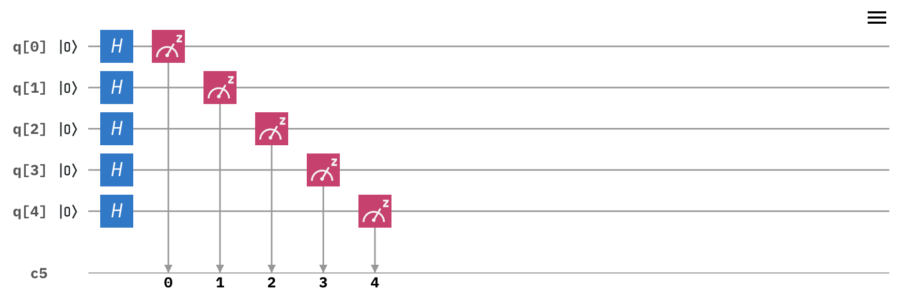
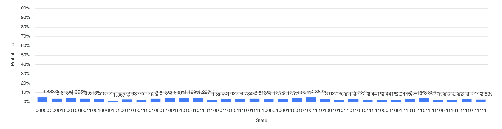

Is a dungeons and dragons style dice roller a good use of a quantum computer? I sure think so.
Although I work for the IBM Q team, and I know a tiny bit about quantum computing, its worth noting that this project was done in my spare time for fun and does not reflect the thoughts or opinions of IBM, or IBM Q. I started this project in effort better understand Qiskit and therefore to better understand our user base. If you want to read the real robust research that is happening in IBM Q, then click here. However, I don't have a background in linear algebra or quantum physics, but wanted to meaningfully play with the real quantum systems that are free to use on the cloud. If that sounds like something you would like to do too, then read on!
Computers as we know them (aka classical computers) can, at best, generate pseudo random numbers. Quantum computers, using uniquely quantum properties, can generate truly random numbers. This project uses random numbers generated from IBM Q's quantum systems to provide a random sequence for a small dice rolling app. While this project leverages IBM Q's real quantum systems, as opposed to a simulator, it has its own host of obstacles, which will be outlined below. But lets start with how we get these naturally random numbers.
To get information from a quantum computer, we need a quantum circuit. To get random numbers, we need this circuit.
This circuit uses 5 qubits, each represented by the horizontal line above. We drop gates (shown as little squares) onto a qubit to manipulate it. We want to add gates that will help give us a random number.
A hadamard gate (or H gate) is dropped on each qubit. The H gate sets that qubit into a superposition state of 0 and 1. A measurement gate is then applied to each qubit. We extract the information from the qubit by measuring it, which results in the state collapsing down to either a 0 or 1 (as opposed to something in between). Because of the H gate, there is a 50% chance of getting a 0, and a 50% of getting a 1. When all 5 qubits are measured, we will get a result that looks something like 10110.
Or 11101.
Or 00101.
Or any 5 bit combination of 0s and 1s
Because all qubits had an equal chance of being 0 or 1, the output had an equal chance of being anything between 00000 and 11111.
We can use Python to convert those binary numbers to decimals from 0 to 31 (for those curious about binary conversion, read here). Because there is an equal chance of getting any of those numbers, we can safely call this circuit a random number generator for values between 0 and 31. Yay! The hard part is over. Now lets put those random numbers to work.
Quantum computers aren't perfect yet, but they are still really good at giving random results. Ideally, there is an equal probability of getting any value between 0-31 (for our 5 qubit system). The histogram below shows the true probabilities from the system "ibmq_ourense", which is the system I used for this experiment.
It's pretty close to a uniform distribution, but not perfect. Some of the imperfection is due to sources of noise--such as errors in measurement--and some of it is due to the number of times we rolled the dice. The lower the noise and the more rolls we make, the closer the observed distribution will be to uniform.
Not exactly. We have a handful of quantum systems that can be accessed for free, but time is shared among all free users. Instead of writing the app so that it pings the system and requires about 10 minutes of waiting after every roll, the app pulls from cached results so you can have your result instantly. I ran the above circuit several thousand times and stored the results in the app. So is the sequence truly random? Yes, unless you do more than 4000ish dice rolls. We'll talk more about experiment limitations later.
Okay, onward to how this thing works!
As explained above, we create a 5 qubit circuit that uses superposition to generate our random numbers. That qiskit code looks like this.
qc = QuantumCircuit(5, 5)
qc.h(0)
qc.h(1)
qc.h(2)
qc.h(3)
qc.h(4)
qc.measure([0, 1, 2, 3, 4], [0, 1, 2, 3, 4])
If the above circuit is sent to a quantum system, we will get a random binary string between 00000 and 11111. Because of the limitations mentioned above, we are going to run the circuit thousands of times and store the results independently so that we can reference them later when a dice gets rolled.
# decide on a system and how many times to send the circuit
backend = provider.get_backend('ibmq_ourense')
shots = 4096
job = execute(qc, backend, shots=shots, memory=True)
#we want to see results independently, instead of as a probability
result = job.result()
memory = result.get_memory()
# need an array to drop all the results into
outputArray = []
#convert results to decimal and drop into array
for x in range(0, shots):
converted = int(memory[x], 2)
outputArray.append(converted)
Note that not all available backends will let you store the results independently, which is specified by "memory" above.
That's it for getting a truly random sequence from our quantum system. Next, let's look at building a simple web app around the results.
The random numbers that are stored in outputArray are copied over to my javascript app and stored in an array called diceCorpus. Instead of always starting at the beginning of the array, we are going to have the app start at a pseudorandom index (ugh, classical computers, am I right?).
var index = Math.floor(Math.random() * diceCorpus.length);
When someone rolls a dice, we need to normalize our or array of random numbers. Technically speaking, its the sequence that is random, not the numbers. Once normalized, we'll multiply the value by the size of the dice and round our up (most dice don't include decimal places. Ours won't either). We also add a "plus 1" because we don't want our dice to roll a zero.
var normalizedRoll = (diceCorpus[index] + 1)/maxDiceRoll
result = Math.ceil(normalizedRoll * diceSize);
In this case maxDiceRoll is 32, because 5 bits has a max of 32.
After a dice roll, we want to move to the next value in our sequence for the next roll. If we have reached the end of the sequence, go back to the beginning.
if (index < diceCorpus.length-1) {
index ++;
} else {
index = 0;
}
The last step is returning the value to the user. I won't get too much into that here, but I'm using
document.getElementById("result").innerHTML = result;
And that's basically it! You too can now make quantum dice app.
The biggest road block to overcome in this experiment is how the quantum system is queried. It still amazes me that real quantum systems can be accessed and used via the web for free. It means non-experts like me can start testing it out and do silly things like make a dice rolling app. But, it also means that everyone has to wait their turn to use the same quantum systems. If this app pinged the quantum hardware every time a user rolls a dice, they would be waiting probably several minutes before getting their results. To overcome this, the app uses a cache of several thousand random numbers previously generated from the quantum computer. One could argue this takes away from the randomness because truly random numbers are being stored and reused. But I think this option is better than waiting 10 minutes every time you want to roll a dice. It also means that every instance of the app uses the same sequence. In order for the results to be different on each roll, the starting point is decided using javascript's pseudorandom function. This leaves the question of whether or not starting at a pseudorandom position in a random sequence breaks the randomness. Truth is, I have no idea. But its the best I could think up.
Other than that, the issues are with scale. After around 4000 rolls, the sequence repeats. So if you roll the same dice over 4000 times, the pattern repeats and thus is no longer random. Also, because the circuit uses only 5 qubits, the app doesn't support a die larger than 32 sides. This is hardly an issue, but worth noting. Lastly, as noted above, quantum computers aren't perfect yet, and the probability distribution isn't exactly even, so some numbers might occur slightly more often, which would be more evident on larger dice. But for your average D&D player, this shouldn't be an issue. Its also worth noting that not even physical dice are free of imperfections and are therefore not perfectly random either. If you find yourself in need of a d20 and no dice laying around, this app should be effective enough to count as a replacement for a night's campaign.
Thanks for reading! I hope you had fun and learned something along the way.